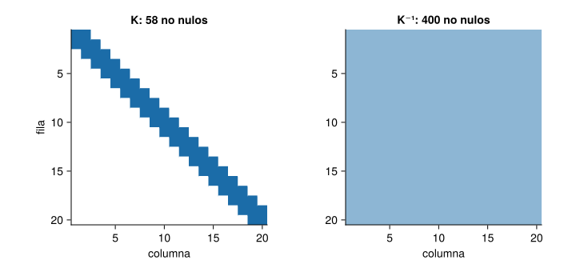
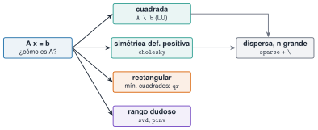

En J1.5 se resolvió A \ b y se calcularon valores propios sin preguntar cómo. Esta unidad abre la caja: toda la álgebra lineal numérica se reduce a factorizar una matriz en piezas más sencillas (triangulares, ortogonales, diagonales) y trabajar con ellas. Saber qué factorización existe y cuál conviene según el problema es lo que separa un cálculo preciso y rápido de uno lento o inestable. Los ejemplos son los de la vía M: el edificio de tres plantas, las matrices de Hankel de las señales y una cadena de miles de masas.
NotaCómo se lee esta unidad
Tiempo orientativo: 120 minutos. Objetivos (5), teoría en seis píldoras (25), práctica guiada (55), «Pídeselo a Claude» (15), ejercicios (15) y cierre (5). Solo se usan las bibliotecas estándar LinearAlgebra y SparseArrays y las funciones de Resonancia.jl.
Objetivos y prerrequisitos
Objetivos. Al terminar esta unidad sabrás:
factorizar con LU (con pivoteo), Cholesky, QR y SVD, y reutilizar la factorización;
elegir la factorización o el método según la estructura de la matriz;
resolver mínimos cuadrados con QR y explicar por qué no conviene usar las ecuaciones normales cuando la matriz está mal condicionada;
estimar el rango numérico con la SVD y construir aproximaciones de bajo rango;
calcular valores propios de un problema generalizado K φ = λ M φ con Cholesky, y resolver con matrices dispersas.
Prerrequisitos. El curso no los impone en el temario; conviene J1.5 (arrays y LinearAlgebra) y la unidad M2.1, que explica la teoría de normas y condicionamiento.
Reparto con otras unidades. La teoría (propiedades, demostraciones) está en M2.1 y la SVD aplicada, en M2.4 y M7. Aquí se implementa y se verifica con cifras.
Teoría breve
NotaUn poco de historia: de la eliminación gaussiana a la SVD
Muchas de las factorizaciones de hoy nacieron antes de que se hablase de matrices. G. W. Stewart cuenta que Gauss describió en 1823 su algoritmo de eliminación como una reducción de una forma cuadrática; que Jacobi (1846) dio un algoritmo para diagonalizar una matriz simétrica, y que la descomposición en valores singulares, en 1873, «se ve como una más de una larga serie de resultados sobre formas canónicas»: Beltrami, Jordan y Sylvester llegaron a ella desde el álgebra lineal, y Schmidt y Weyl, desde las ecuaciones integrales (Stewart 1993). El tratado de referencia actual para los algoritmos es el de Golub y Van Loan (Golub y Van Loan 2013).
Fuente: Stewart (1993) (Stewart 1993); los datos son los ya recogidos y comprobados en M2.1 (consulta del 25-10-2026). Si alguna fuente discrepa de una fecha, prevalece la de la fuente enlazada.
Stewart, G. W. 1993. «On the Early History of the Singular Value Decomposition». SIAM Review 35 (4): 551-66. https://doi.org/10.1137/1035134.
J3.3.1 LU con pivoteo
La factorización LU escribe \(\mathbf P\mathbf A=\mathbf L\mathbf U\), con \(\mathbf L\) triangular inferior, \(\mathbf U\) triangular superior y \(\mathbf P\) una permutación de filas (el pivoteo, que evita dividir por números pequeños). Es lo que hace A \ b para una matriz cuadrada. Una vez factorizada, resolver con un nuevo segundo miembro cuesta mucho menos que factorizar de nuevo (\(\mathcal O(n^2)\) frente a \(\mathcal O(n^3)\)), por lo que se factoriza una vez y se reutiliza:
Ver el código
Random.seed!(1)A =randn(5, 5)F =lu(A) # F.L, F.U, F.pbs = [randn(5) for _ in1:3] # tres segundos miembros(PA_igual_LU =norm(F.L * F.U - A[F.p, :]) <1e-13, residuos_menores_que_1e13 =all(norm(A * (F \ b) - b) <1e-13for b in bs))
Para resolver el mismo sistema con muchos segundos miembros distintos conviene factorizar A una sola vez y reutilizar el factor.
Verdadero: F = lu(A) cuesta \(\mathcal O(n^3)\) una vez, y cada F \ b solo \(\mathcal O(n^2)\).
J3.3.2 Cholesky y el problema generalizado
Las matrices de masa y rigidez de una estructura son simétricas definidas positivas (SPD). Para ellas existe la factorización de Cholesky\(\mathbf M=\mathbf L\mathbf L^{\mathsf T}\), el doble de rápida que LU y que sirve además de test de definición positiva: isposdef(K). Con ella, el problema generalizado \(\mathbf K\boldsymbol\varphi=\lambda\mathbf M\boldsymbol\varphi\) se convierte en uno estándar y simétrico, \(\mathbf C\mathbf y=\lambda\mathbf y\) con \(\mathbf C=\mathbf L^{-1}\mathbf K\mathbf L^{-\mathsf T}\) y \(\mathbf y=\mathbf L^{\mathsf T}\boldsymbol\varphi\):
Ver el código
m =2.0e5M =Diagonal([m, m, m])K = [1e8-5e70.0; -5e79e7-4e7; 0.0-4e74e7] # edificio de 3 plantas (N/m)L =cholesky(Symmetric(Matrix(M))).LC =Symmetric(inv(L) * K *inv(L'))f_chol =sqrt.(eigvals(C)) ./2πf_gen =sqrt.(eigvals(Symmetric(K), Symmetric(Matrix(M)))) ./2π(K_es_SPD =isposdef(K), menos_K_es_SPD =isposdef(-K), frecuencias_Hz =round.(f_chol, digits=4), coinciden = f_chol ≈ f_gen)
Son las frecuencias del edificio de J1.5 (1,1048, 2,9387 y 4,3902 Hz).
J3.3.3 QR y mínimos cuadrados
Con más ecuaciones que incógnitas (\(\mathbf A\in\mathbb R^{m\times n}\), \(m>n\)) se busca el \(\mathbf x\) que minimiza \(\lVert\mathbf A\mathbf x-\mathbf b\rVert_2\). La factorización QR (\(\mathbf A=\mathbf Q\mathbf R\), con \(\mathbf Q\) de columnas ortonormales) lo resuelve con la estabilidad de una matriz ortogonal, y es lo que hace A \ b si A es rectangular. La alternativa, las ecuaciones normales\(\mathbf A^{\mathsf T}\mathbf A\,\mathbf x=\mathbf A^{\mathsf T}\mathbf b\), es más corta de escribir pero eleva al cuadrado el condicionamiento: \(\kappa(\mathbf A^{\mathsf T}\mathbf A)=\kappa(\mathbf A)^2\) (M2.1). Se ve con un ajuste polinómico de la frecuencia de un modo frente a la temperatura:
Ver el código
T =collect(range(-5, 35, length=41)) # °CRandom.seed!(2)frec =1.2.-0.002.* T .+0.001.*randn(41) # Hz, deriva térmica lineal con ruidofilas =map([4, 8, 12, 16]) do g V =vandermonde(T ./40, g +1) # columnas 1, t, …, t^g (t normalizada) cq = V \ frec # QR cn = (V'* V) \ (V'* frec) # ecuaciones normales"| $g | $(coma(cond(V), d=0)) | $(replace(@sprintf("%.1e", cond(V'* V)), "."=>",")) | $(replace(@sprintf("%.6f", norm(V * cq - frec)), "."=>",")) | $(replace(@sprintf("%.6f", norm(V * cn - frec)), "."=>",")) | $(replace(@sprintf("%.1e", norm(cq - cn) /norm(cq)), "."=>",")) |"endprintln("| grado | κ(V) | κ(VᵀV) | residuo QR | residuo normales | dif. relativa de coeficientes |\n|---|---|---|---|---|---|\n"*join(filas, "\n"))
Tabla 1: Ajuste polinómico por QR y por ecuaciones normales. El residuo apenas delata el problema, pero los coeficientes sí: la diferencia entre los dos métodos pasa de \(10^{-12}\) con grado 4 a un 0,7 % con grado 12 y a un 100 % con grado 16, cuando \(\kappa(\mathbf V^{\mathsf T}\mathbf V)\) supera \(1/\varepsilon\approx4{,}5\cdot10^{15}\).
grado
κ(V)
κ(VᵀV)
residuo QR
residuo normales
dif. relativa de coeficientes
4
417
1,7e+05
0,006402
0,006402
2,2e-12
8
269844
7,3e+10
0,005996
0,005996
2,2e-07
12
202513573
4,1e+16
0,005910
0,005910
6,8e-03
16
179294819511
1,3e+19
0,005720
0,005774
1,0e+00
Con grado bajo no se nota, y por eso el error se cuela: con grado 12 los dos métodos dan casi el mismo residuo, pero coeficientes que difieren un 0,7 %, y con grado 16 las normales ya devuelven coeficientes sin sentido (y un residuo un 1 % mayor). Un residuo pequeño no garantiza que los parámetros sean correctos.
Las ecuaciones normales y la QR dan siempre la misma precisión, porque resuelven el mismo problema.
Falso. Resuelven el mismo problema matemático, pero las normales elevan al cuadrado el número de condición y pierden el doble de cifras. Con \(\kappa(\mathbf A)=10^8\), \(\kappa(\mathbf A^{\mathsf T}\mathbf A)=10^{16}\): no queda ninguna cifra fiable en doble precisión.
J3.3.4 SVD, rango y bajo rango
La SVD\(\mathbf A=\mathbf U\boldsymbol\Sigma\mathbf V^{\mathsf T}\) es la factorización más informativa: sus valores singulares \(\sigma_1\ge\sigma_2\ge\dots\) dicen cuántas «direcciones independientes» tiene la matriz y cuánto pesa cada una. El rango numérico es el número de valores singulares por encima de una tolerancia (rango_numerico del paquete). Y el teorema de Eckart–Young dice que la mejor aproximación de rango \(k\) conserva los \(k\) primeros valores singulares, con error \(\lVert\mathbf A-\mathbf A_k\rVert_2=\sigma_{k+1}\). Se ve con la matriz de Hankel de una señal de dos modos (la de J1.1), cuyo rango debe ser \(2\times2=4\) (cada senoide aporta dos):
Hay cuatro valores singulares grandes (150,2; 150,1; 60,0 y 59,7) y el quinto es de \(3{,}6\cdot10^{-13}\): rango 4, y el error de la aproximación de rango 4 coincide con \(\sigma_5\) (la señal está exactamente en ese subespacio). Con ruido el panorama cambia:
Figura 1: Valores singulares de la matriz de Hankel (ventana de 100 muestras) de una señal de dos modos, sin ruido (azul) y con ruido gaussiano de 0,2 (naranja). Sin ruido hay un salto brusco tras el cuarto valor (el rango es 4, es decir, dos modos); con ruido, los cuatro primeros siguen destacando sobre un «suelo» de unos 8, que marca el ruido.
Este es el primer paso de los métodos de identificación de M7 (ERA, SSI): contar los modos mirando dónde acaba el salto entre valores singulares. Con ruido no hay un cero exacto: se busca el codo, y la decisión es del analista.
¿Cuál es el rango numérico de la matriz de Hankel de una señal que es suma de dos senoides de frecuencias distintas?
4: cada senoide pura da rango 2 (un par de valores singulares) y las dos suman 4.
J3.3.5 Valores propios
eigen(A) calcula valores y vectores propios; para una matriz simétrica conviene envolverla con Symmetric(A), que activa un algoritmo más rápido y garantiza valores propios reales y vectores ortogonales. Con una matriz no simétrica los valores propios pueden ser complejos. Un buen control de calidad es contrastar con una fórmula conocida: la cadena de \(n\) masas iguales \(m\) unidas por muelles \(k\), anclada por un extremo, tiene frecuencias analíticas
Los valores propios de una matriz simétrica real son reales, y por eso conviene indicarlo con Symmetric.
Verdadero. Es una propiedad de las matrices simétricas reales, y Symmetric permite a eigen usar un algoritmo específico, más rápido y con garantía de resultado real.
J3.3.6 Matrices dispersas
La matriz de rigidez de una cadena, una viga o un edificio tiene casi todo ceros: es dispersa. SparseArrays guarda solo los elementos no nulos (formato CSC) y \ elige automáticamente un solver para dispersas, con lo que se resuelven problemas de miles de grados de libertad con memoria y tiempo mínimos. Lo contrario es un error caro: convertir a densa con Matrix(K).
Ver el código
n =2000Ms, Ks =cadena_masas_muelles(n)Kd_bytes = n^2*8# lo que ocuparía la densa (8 bytes por elemento)fuerza =zeros(n); fuerza[end] =1.0# fuerza unidad en el extremo libreu = Ks \ fuerza(nceros =nnz(Ks), de_n2 = n^2, memoria_dispersa_kB =round(Base.summarysize(Ks) /1e3), memoria_densa_MB = Kd_bytes /1e6, veces_menos =round(Kd_bytes /Base.summarysize(Ks)), residuo =norm(Ks * u - fuerza), desplazamiento_extremo = u[end])
El desplazamiento del extremo es exactamente \(n=2000\) (con \(k=1\), la fuerza unidad estira cada uno de los \(n\) muelles una unidad), un control analítico perfecto del solver. Pero cuidado con una propiedad contraintuitiva: la inversa de una matriz dispersa es, en general, densa (Figura 2), y por eso no se calcula inv(K).
Ver el código
let n =20 _, K20 =cadena_masas_muelles(n) Ki =inv(Matrix(K20)) fig =Figure(size=(720, 340))for (j, (A, titulo)) inenumerate([(Matrix(K20), "K: $(nnz(K20)) no nulos"), (Ki, "K⁻¹: $(count(!iszero, round.(Ki, digits=12))) no nulos")]) ax =Axis(fig[1, j], title=titulo, aspect=1, yreversed=true, xlabel="columna", ylabel=j ==1 ? "fila":"")heatmap!(ax, 1:n, 1:n, Float64.(abs.(A) .>1e-12)', colormap=[:white, AZUL])end figend

Figura 2: Patrón de ceros de la matriz de rigidez de una cadena de 20 masas (izquierda: tridiagonal, 58 elementos no nulos de 400) y de su inversa (derecha: completamente llena, 400 no nulos). Un elemento no nulo se dibuja en azul.

Figura 3: Qué factorización o método elegir según la estructura del problema.
NotaIdea clave
No se elige el método por costumbre sino por la estructura (Figura 3): cuadrada, SPD, rectangular, de rango dudoso o dispersa. Y se contrasta siempre con un resultado conocido (una fórmula analítica, un residuo, una propiedad como \(\boldsymbol\Phi^{\mathsf T}\mathbf M\boldsymbol\Phi=\mathbf I\)).
AdvertenciaErrores frecuentes
inv(A) * b en lugar de A \ b: más lento y menos preciso. (2) Decidir si una matriz es singular con det(A) == 0: el determinante depende de la escala (det(1e-3 * I(100)) es \(10^{-300}\) y la matriz está perfectamente condicionada); se usa cond(A) o el rango numérico. (3) Resolver mínimos cuadrados con las ecuaciones normales cuando cond(A) es grande. (4) Llamar a eigen(K, M) con matrices simétricas sin Symmetric: no aprovecha la simetría. (5) Convertir una matriz dispersa a densa con Matrix(K): para \(n=100\,000\) ocuparía \(10^{10}\times8\) bytes = 80 GB. (6) Calcular inv(K) de una matriz dispersa: la inversa es llena.
Para saber más
Driscoll y Braun, Fundamentals of Numerical Computation, caps. 2 y 3 (factorizaciones y mínimos cuadrados), edición en línea gratuita (Driscoll y Braun 2022).
Golub y Van Loan, Matrix Computations: la referencia de los algoritmos (Golub y Van Loan 2013).
La teoría de normas, condicionamiento y SVD, en M2.1.
Driscoll, Tobin A., y Richard J. Braun. 2022. Fundamentals of Numerical Computation: Julia Edition. SIAM. https://fncbook.com.
Golub, Gene H., y Charles F. Van Loan. 2013. Matrix Computations. 4.ª ed. Johns Hopkins University Press.
Práctica guiada
Tres tareas encadenadas sobre la cadena de masas y las señales: una respuesta estática, un contraste modal y un recuento de modos.
Paso 1. Respuesta estática de una estructura grande. Con la cadena de 2000 masas de arriba se ha resuelto K u = f. Se comprueba el resultado más allá del extremo: la solución completa es \(u_i=i\) (cada masa se desplaza lo que se estiran los muelles que tiene detrás).
Ver el código
(u_es_1_2_n = u ≈collect(1.0:n), con_cinco_cargas =all(norm(Ks * (lu(Ks) \ b) - b) <1e-9for b ineachcol(randn(MersenneTwister(5), n, 5))))
(u_es_1_2_n = true, con_cinco_cargas = true)
Paso 2. Contraste modal. Las diez primeras frecuencias de la cadena de \(n=10\) coinciden con ecuación 1 hasta el redondeo (\(10^{-16}\)). Para el edificio de tres plantas, además, los modos propios cumplen la ortogonalidad respecto de la masa:
El cociente entre el cuarto y el quinto es 7,4 frente a 2,4 entre el primero y el cuarto: hay un salto claro, y la decisión de dos modos (rango 4) es defendible. Con más ruido el salto se difuminaría y habría que aceptar la incertidumbre y decirlo.
«Pídeselo a Claude»
TipPrompt
«Con Julia, --project=., LinearAlgebra, SparseArrays y Resonancia.jl: (1) construye una cadena de 2000 masas con cadena_masas_muelles(2000), resuelve K u = f con una fuerza unidad en el último grado de libertad y comprueba que u[end] vale 2000 y que K no se convierte a densa; (2) calcula las 10 primeras frecuencias de la cadena de 10 masas con modos_propios y compáralas con la fórmula analítica f_j = (1/π) sin((2j-1)π/(2(2n+1))); (3) calcula los valores singulares de la matriz de Hankel de 10 s de sin(2π·2,5t) + 0,4 sin(2π·7t) a 100 Hz con ventana de 100 y dime cuántos son significativos. No uses inv. No inventes valores: si algo no sale, dilo.»
Verifica. (a) Que u[end] es 2000 y que el residuo norm(K*u - f) es del orden de \(10^{-15}\). (b) Que el error máximo frente a la fórmula analítica es del orden de \(10^{-16}\). (c) Que hay cuatro valores singulares significativos (150,2; 150,1; 60,0; 59,7) y el quinto es \(\approx10^{-13}\). (d) Que no ha usado inv(K) ni Matrix(K) con \(n=2000\). (e) Que no ha dado por «aproximadamente igual» algo que difiere en la tercera cifra.
Ejercicios
¿Cuántos elementos no nulos tiene la matriz de rigidez Ks de la cadena de 2000 masas?
5998: una diagonal de 2000 elementos y dos adyacentes de 1999 cada una (\(2000+2\cdot1999=5998\)), frente a los \(4\cdot10^6\) de la matriz densa.
¿Cuántas veces menos memoria ocupa Ks en formato disperso que en formato denso (aproximadamente)?
Base.summarysize(Ks) frente a Base.summarysize(Matrix(Ks)).
Unas 285 veces (112 KB frente a 32 MB). Para \(n\) mayor, la diferencia crece con \(n\).
Como \(\mathbf K\) es dispersa, su inversa también lo es y se puede almacenar en formato disperso.
Falso. La inversa de una matriz tridiagonal como la de la cadena es llena (Figura 2). Por eso se resuelve K \ f y no se forma inv(K).
Para cada caso, di qué factorización usarías: (a) resolver K u = f con K simétrica definida positiva y 50 cargas distintas; (b) ajustar una recta a 1000 puntos; (c) saber si una matriz de 200 × 200 tiene rango completo; (d) 50 000 masas en cadena.
Cholesky (o LU) factorizando una vez y reutilizando.
QR con A \ b (mínimos cuadrados).
SVD (rango_numerico), no el determinante.
Matrices dispersas con \.
La doy por superada si…
Factorizo con lu, cholesky, qr y svd, y sé reutilizar la factorización.
Elijo el método según la estructura de la matriz y lo justifico.
Sé por qué las ecuaciones normales pierden precisión y lo demuestro con un ejemplo.
Estimo el rango numérico con la SVD y cuento modos en la matriz de Hankel de una señal.
Resuelvo con matrices dispersas y contrasto el resultado con una fórmula conocida.
Cierre. Escribe tres líneas: qué he entendido, qué todavía no domino y cuál es mi siguiente paso pequeño. Antes de aceptar código de Claude que resuelva un sistema, comprueba el residuo.